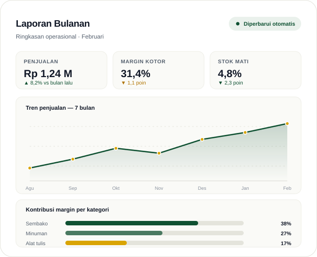
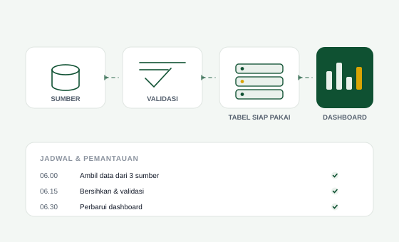
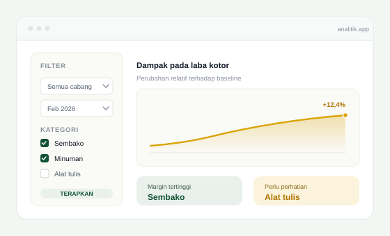

Laporan bulanan 3–5 hari kerja
Dikerjakan manual dari beberapa file, sering telat sampai ke pengurus.
Konsultan data & training — untuk usaha umum maupun lembaga syariah
Saya membangun sistem pelaporan, model proyeksi, dan analitik untuk usaha dan lembaga: retail, F&B, jasa, koperasi, sampai koperasi syariah, BMT, dan lembaga zakat. Dari harga dan stok sampai pembiayaan dan dampak program.

01 — Masalah
Dikerjakan manual dari beberapa file, sering telat sampai ke pengurus.
Tidak ada yang tahu SKU atau menu mana yang sebenarnya menanggung biaya.
Tidak ada data perputaran yang dipakai untuk memutuskan pembelian.
Proyeksi dan asumsinya lemah saat diuji oleh bank atau investor.
Yang tersedia hanya foto kegiatan, bukan angka yang bisa diaudit.
Angka tersebar di banyak file dan tidak konsisten antar laporan.
Masalahnya jarang soal kurang data. Biasanya soal data yang tidak pernah diubah menjadi keputusan.
02 — Layanan
Setiap project berakhir dengan sesuatu yang bisa dipakai — bukan slide yang berhenti di folder.
Data penjualan, kas, dan stok dalam satu dashboard yang diperbarui otomatis. Laporan bulanan yang tadinya butuh berhari-hari jadi satu klik.
Mulai Rp 7,5 jt
Analisis yang menjawab pertanyaan mahal: produk mana yang menggerus margin, pelanggan mana yang layak dipertahankan, berapa stok bulan depan.
Mulai Rp 5 jt
Setiap bulan: laporan siap saji, memo insight, sesi review dengan manajemen, dan dashboard yang terus dirawat — dari perawatan ringan sampai peran kepala data paruh waktu.
Mulai Rp 1,5 jt/bulan
Dua pekerjaan di bawah ini spesifik untuk lembaga syariah. Kalau tidak relevan, lewati saja — layanan di atas berlaku untuk semua usaha.
Model proyeksi dengan perhitungan nisbah dan porsi bagi hasil untuk akad mudharabah/musyarakah, lengkap dengan skenario dan tabel sensitivitas — siap dipertanggungjawabkan saat due diligence.
Dashboard penghimpunan–penyaluran–dampak dengan indikator berbasis maqashid yang terukur, plus laporan untuk donor dan regulator.
Label bukan syarat. Klien saya beragam: ada yang beroperasi dengan prinsip syariah secara formal, ada yang menghindari riba dan produk haram tanpa memakai label apa pun, dan ada yang tidak membahasnya sama sekali. Ketiganya mendapat layanan dan harga yang sama. Yang perlu ada hanya data, dan satu keputusan yang ingin Anda yakini.
03 — Cara kerja
Gratis. Kita petakan masalah dan data yang sudah ada. Tanpa kewajiban lanjut.
Temuan, prioritas, dan roadmap. Baru setelah itu bicara solusi.
Dashboard, analisis, atau model — plus pelatihan singkat agar tim Anda bisa memakainya.
Laporan bulanan dan perawatan agar hasilnya tidak berhenti di serah terima.
04 — Bukti
Portofolio yang bisa dibuka dan diperiksa sendiri, bukan klaim. Studi kasus klien akan ditambahkan setelah klien pertama menyetujui publikasi.
Satu halaman untuk membaca penjualan, laba, dan rasio laba sekaligus — per negara, per kota, dan per sub-kategori. Termasuk penanda sub-kategori yang marginnya negatif, hal yang tidak terlihat kalau hanya melihat total penjualan.
Laporan Power BI tiga halaman yang diekspor ke PDF — bentuk yang biasa diminta untuk dilampirkan ke rapat, pengurus, atau pengajuan. Bisa dibuka langsung untuk melihat cara angka disusun dan disimpulkan.

Alur otomatis dari sumber ke tabel siap analisis, dengan validasi dan pemantauan — supaya laporan tidak bergantung pada satu orang yang ingat memperbarui file.

Analisis yang bisa dicoba sendiri oleh pengguna: pilih segmen, lihat dampaknya pada angka, lalu ambil kesimpulan tanpa menunggu analis.
Kode dan proyek lain bisa dilihat di GitHub
05 — Paket
Harga di bawah adalah titik awal, bukan angka final. Yang menentukan adalah jumlah sumber data dan kompleksitasnya.
Rp 1,5 jt/bulan
Rp 3 jt/bulan
Rp 8 jt/bulan
Rp 15 jt/bulan
Minimum 3 bulan. Berhenti setelah bulan pertama tanpa penalti. Data, dashboard, dan dokumentasi tetap milik Anda — kami tidak menahan akses.
Paket project sudah termasuk 3 bulan pendampingan. Setelah itu Anda bisa lanjut bulanan, atau berhenti — data dan dashboard tetap milik Anda.
06 — Corporate training
Program in-house yang dirancang untuk kebutuhan nyata lembaga Anda. Peserta berlatih dengan data Anda sendiri (dianonimkan lebih dulu), sehingga yang dihasilkan bukan sekadar pemahaman, tapi juga artefak yang bisa langsung dipakai.
Membaca dashboard, berpikir dengan angka, statistika untuk keputusan manajerial.
Excel & Sheets, SQL, Power BI, Looker Studio, Python, visualisasi.
Sampling & uji hipotesis, regresi, forecast, A/B testing, evaluasi dampak.
Pipeline & warehouse, data quality, KPI dictionary, hak akses & anonimisasi, otomasi.
Mulai Rp 12 jt
Mulai Rp 25 jt
Mulai Rp 15 jt
Mulai Rp 20 jt
Mulai Rp 20 jt
Tersedia sertifikat penyelesaian. Untuk kelas dalam jumlah besar atau program tahunan, minta proposal khusus.
07 — Tentang
Saya praktisi data. Sehari-hari saya bekerja sebagai Senior Data Engineer — membangun sistem data yang harus akurat, otomatis, dan tidak boleh mati. Latar belakang kuantitatif saya membuat model proyeksi, forecast, dan evaluasi dampak bisa disusun dengan asumsi tertulis dan uji sensitivitas, bukan angka yang dikarang.
Saya bekerja untuk usaha dan lembaga dari berbagai sektor. Sebagian beroperasi dengan prinsip syariah secara formal; sebagian menghindari riba dan produk haram tanpa memakai label apa pun; sebagian tidak membahasnya sama sekali. Yang menyatukan mereka: keputusan yang bergantung pada angka, sementara datanya masih tersebar di Excel, WhatsApp, dan buku manual. Saya menempuh pendidikan Ekonomi Syariah, jadi untuk lembaga yang memang beroperasi dengan prinsip syariah, nisbah, kolektibilitas, mustahik, dan maqashid sudah menjadi bahasa kerja saya.
Yang saya jual bukan laporan. Yang saya jual adalah keyakinan bahwa angka yang Anda bawa ke rapat itu benar.
Data diambil langsung dari sumber Anda (POS, spreadsheet, database, API) lewat pipeline terjadwal; transformasi dan validasi berjalan otomatis; hasilnya masuk ke dashboard atau warehouse. Semua berjalan di akun milik Anda. Untuk kebutuhan skala besar: DuckDB, BigQuery, Python, dan orkestrasi terjadwal. Detail arsitektur tersedia saat diskusi.
08 — Pertanyaan
Tidak. Klien beragam: ada yang beroperasi dengan prinsip syariah secara formal, ada yang menghindari riba dan produk haram tanpa memakai label apa pun, dan ada yang tidak membahasnya sama sekali. Ketiganya mendapat layanan dan harga yang sama. Yang perlu ada hanya data, dan satu keputusan yang ingin Anda yakini.
Tidak. Mulai dari Excel, Google Sheets, atau export dari POS dan aplikasi koperasi yang sudah ada.
Justru itu kasus paling umum. Fase pertama biasanya merapikan data sebelum membuat dashboard.
Akses lewat akun Anda sendiri, jadi data tidak perlu dipindahkan ke tempat lain. Salinan data mentah dihapus setelah project selesai. Data tetap milik Anda, dan kami tidak menahan akses.
Diagnostic 5 hari kerja. Dashboard pertama 2–3 minggu. Analisis khusus 3–5 hari.
Minimum 3 bulan, dan Anda bisa berhenti setelah bulan pertama tanpa penalti. Data, dashboard, dan dokumentasi tetap milik Anda.
Ya, seluruh proses remote lewat Google Meet dan WhatsApp, dengan sesi serah terima online yang direkam.
Bisa — pakai format sprint 3–5 hari atau blok 5 jam, mulai Rp 1,5 juta.
Ya. Kurikulum disusun setelah kami tahu level peserta dan data yang tersedia. Kelas yang mencampur level (misalnya direktur dan staf administrasi) tidak kami sarankan — hasilnya biasanya tidak memuaskan keduanya.
09 — Kontak
Mulai dari percakapan 30 menit. Tidak ada biaya, tidak ada kewajiban lanjut.
Konsultasi via WhatsAppSampaikan jumlah peserta dan topik yang diinginkan, saya kirimkan proposal dan silabus.
Minta Proposal TrainingAtau lewat Instagram @auldatastudio LinkedIn GitHub